1日目
08:30 持光寺
あじさい寺とも呼ばれる持光寺で紫陽花を鑑賞しました。
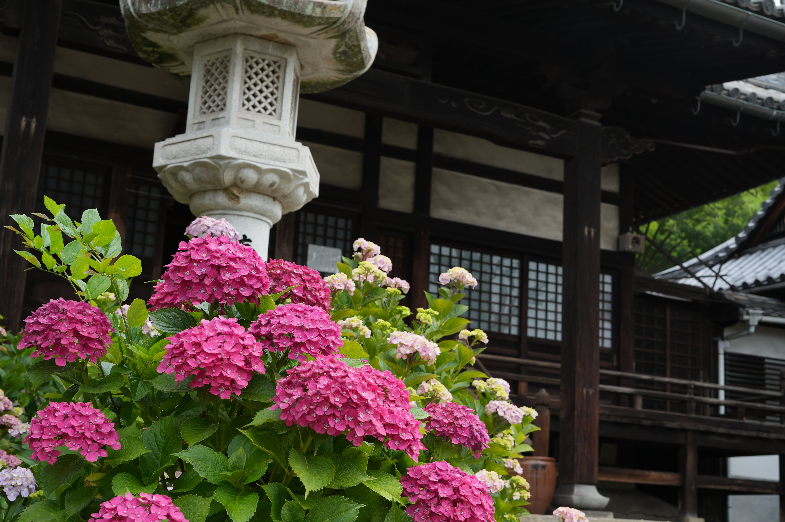
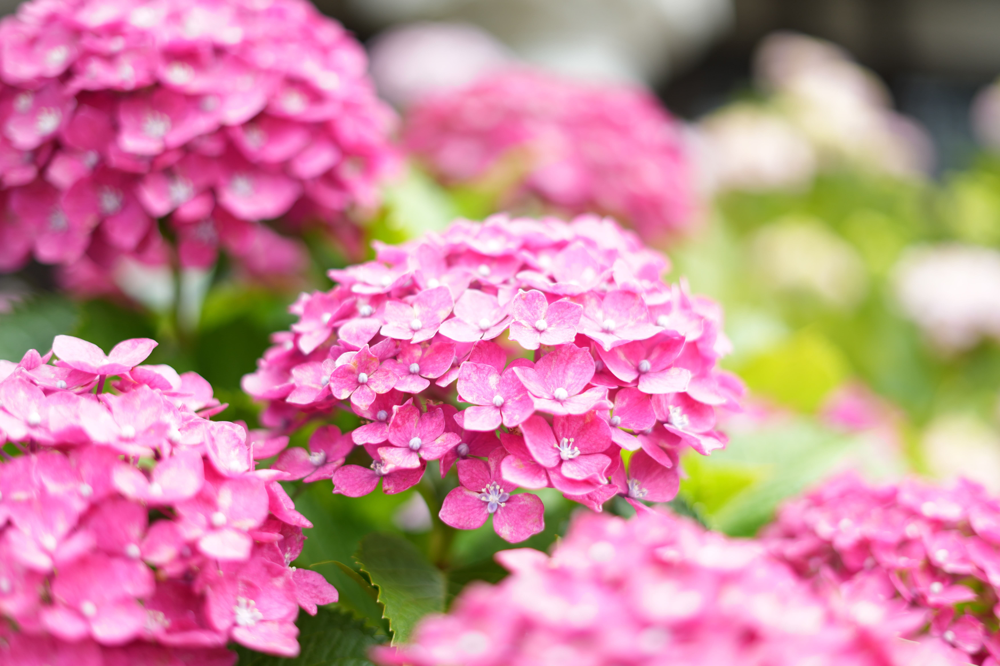
09:00 千光寺
紫陽花に満足した後、展望台と千光寺へ向かいます。
千光寺では風鈴の音を聞きながら、尾道水道の景色を楽しみました。
猫の細道ではカワイイ猫様にも出会えました！
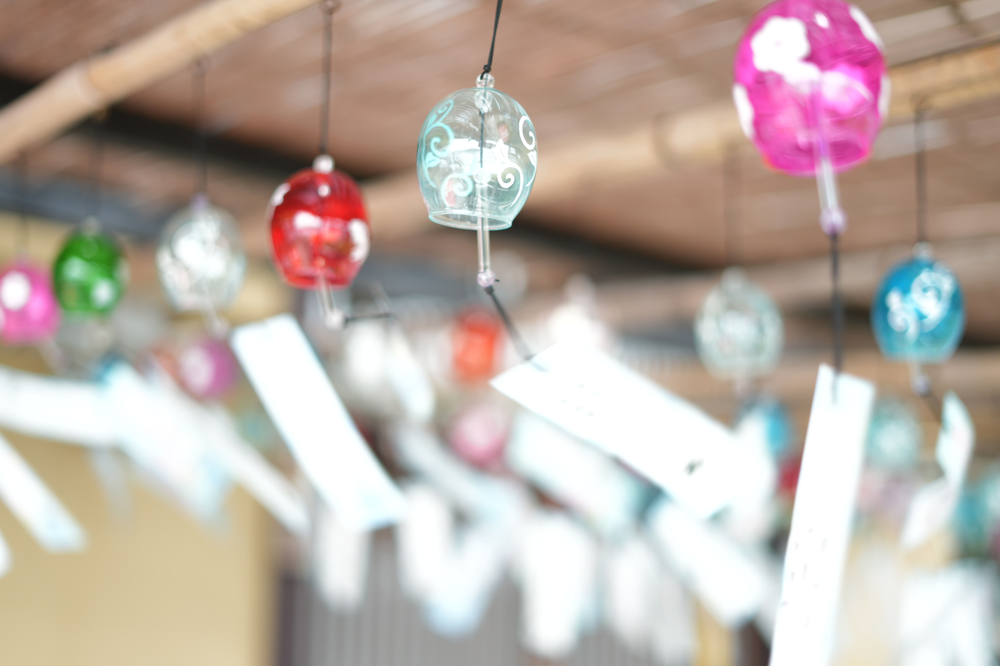
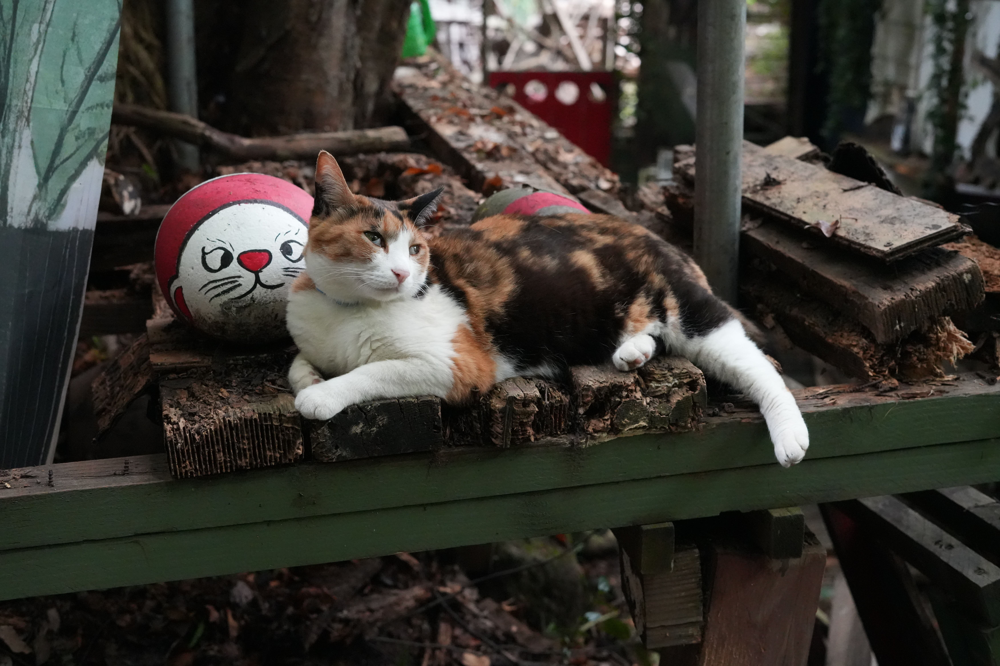
11:00 le Jardin Charme
想像していたより急な坂道や階段が多かったため、休憩できる場所を探していたところ
オシャレな看板を見つけたので、le Jardin Charme(ル ジャルダン シャルム)でティータイム！
ここではホテルも運営しているそうなので、宿泊してみたいです。


12:00 水尾之路
お昼は水尾之路でパスタをいただきます。
カルボナーラパスタレモン風味を注文しました。
レモンの爽やかな風味がパスタとマッチしてとても美味しかったです！
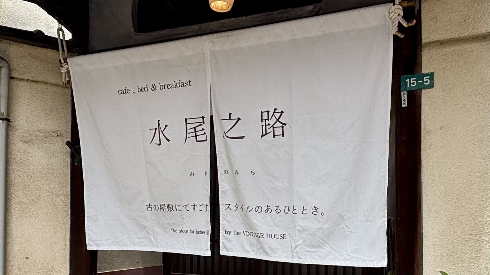
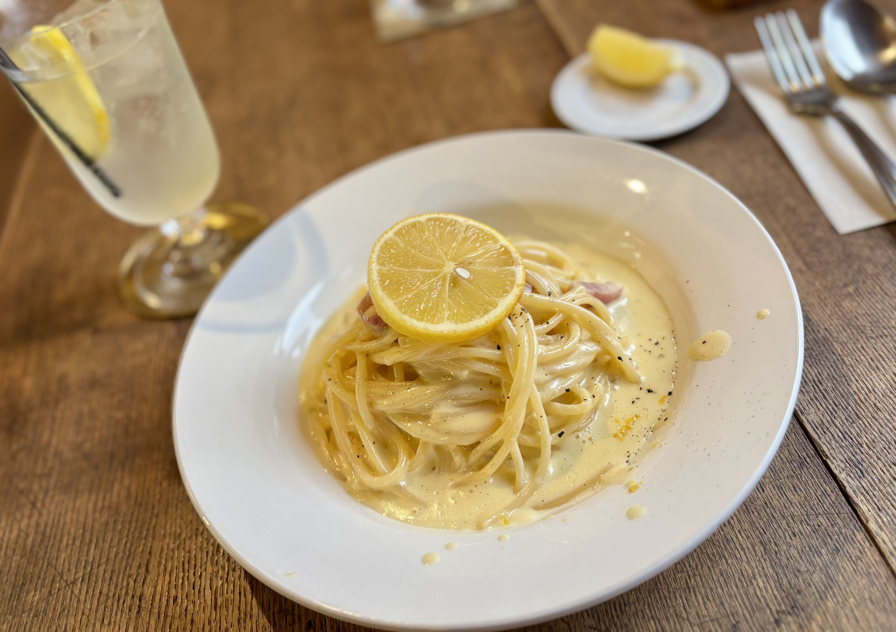
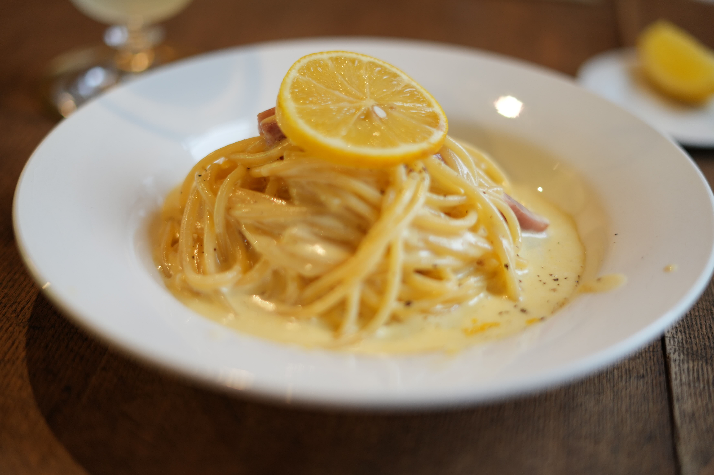
17:30 喰海
ホテルにチェックインして、一休みした後に尾道ラーメンを食べに行きました。
小魚の出汁と醤油のスープで、想像していたよりさっぱりしていて美味しかったです。
カウンターから見える尾道水道の景色を見ながら食べるラーメンは最高でした。
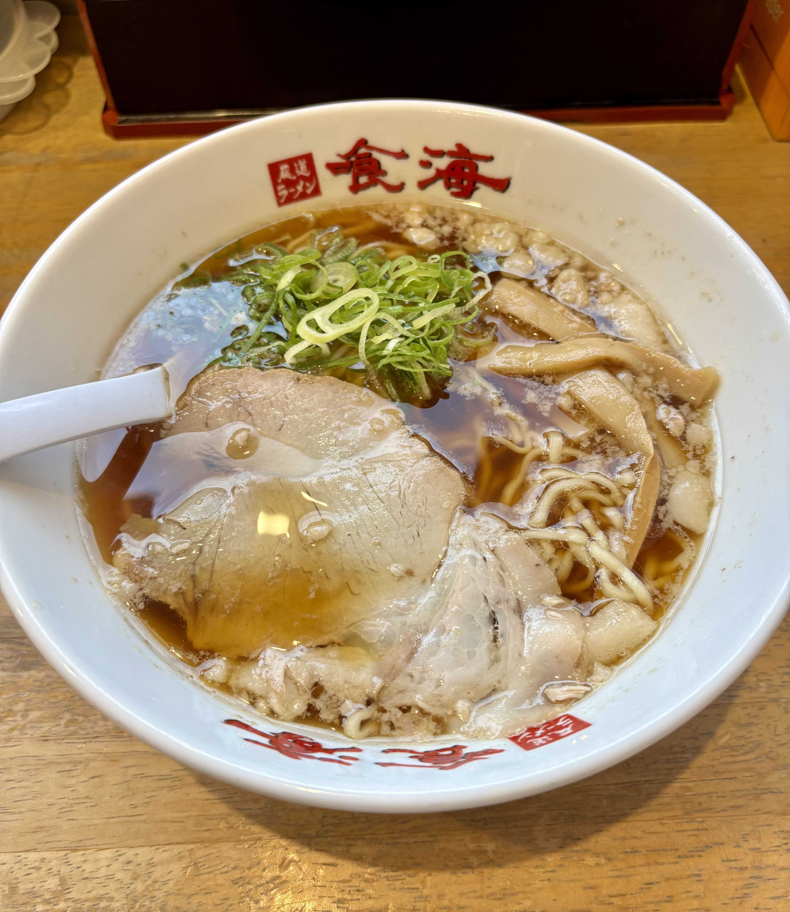
食べ終わった後は夜の尾道を散策
静まり返った坂道は日中とは違った雰囲気で
違う場所ではないかと錯覚してしまうほどでした。
町の光を反射して光る尾道水道もとても素敵でした。
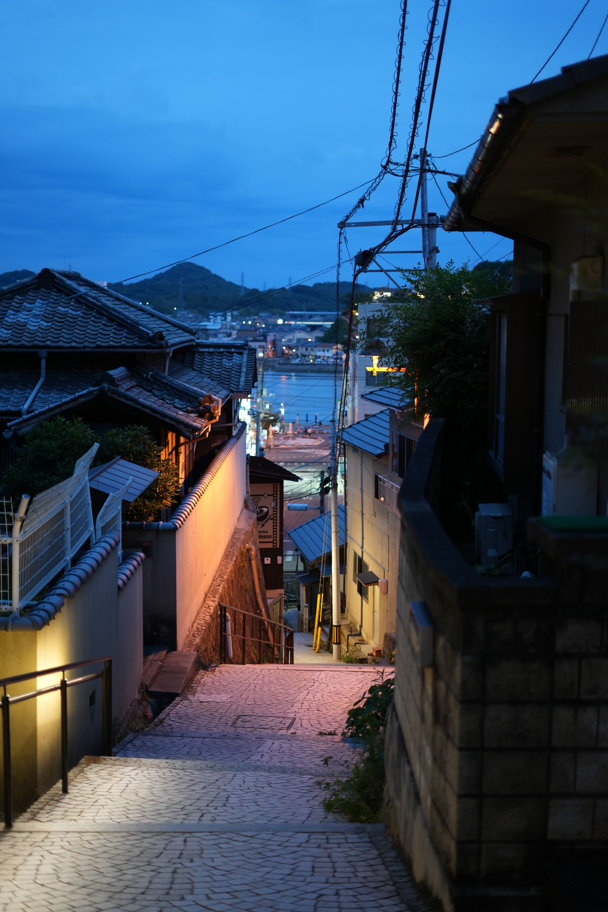
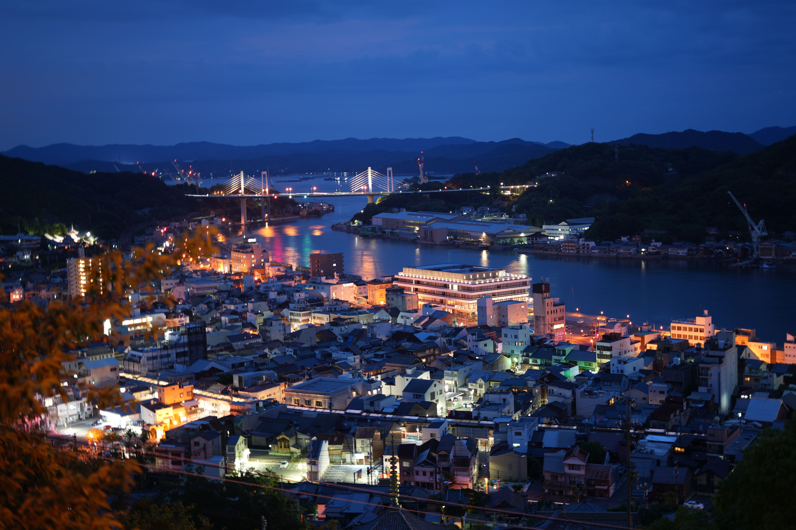
2日目
06:00 鯛出汁 亀ラーメン
朝から開店しているラーメンがあるということで食べに行きました
お会計の時に本日1番最初に来店したお客さんということでコーヒーもいただきました！

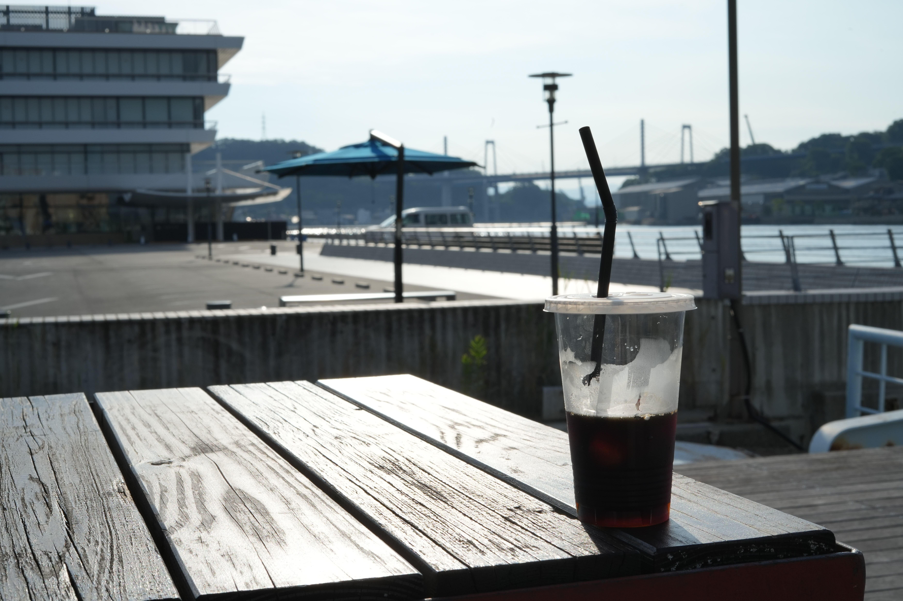
09:00 ロープウェイに乗車
ロープウェイに乗って展望台に向かいます
昨日より遠くがはっきり見えるほど良い天気でした!
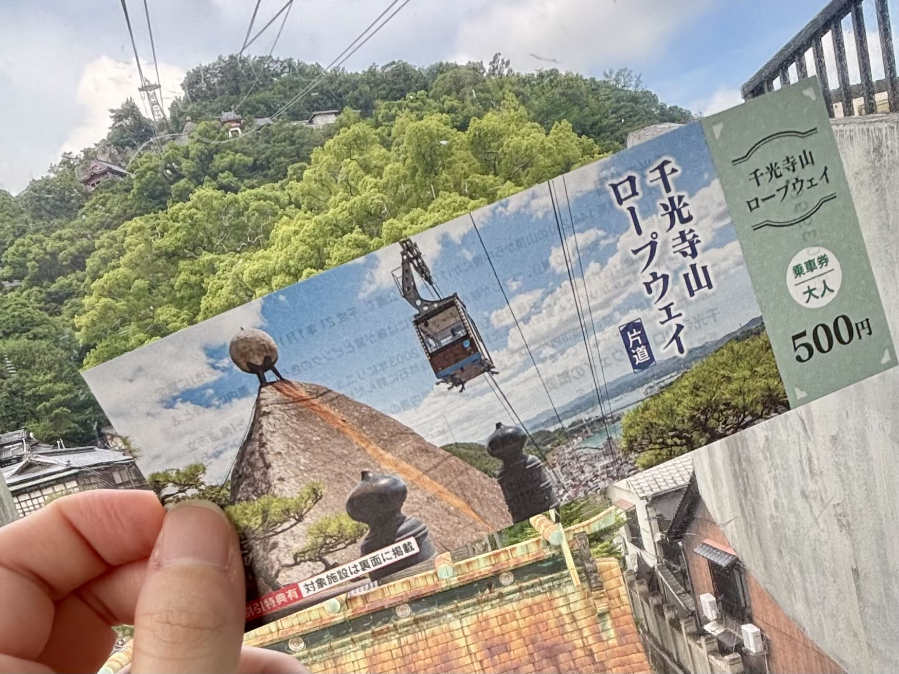

丸ぼし
お昼も尾道ラーメンをいただきます！
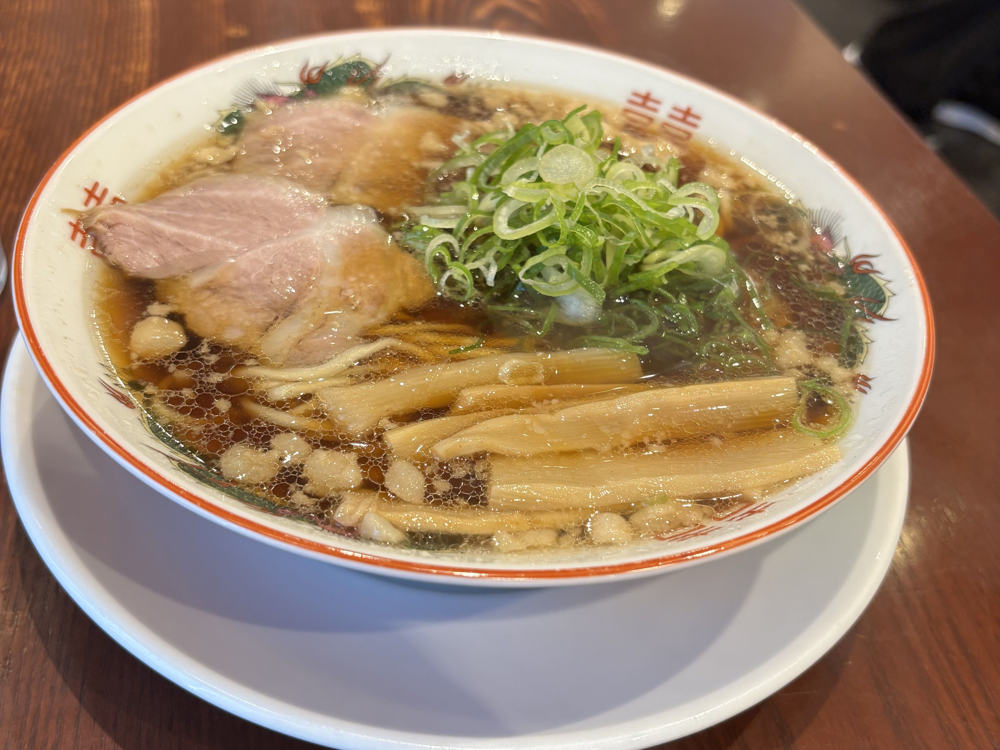
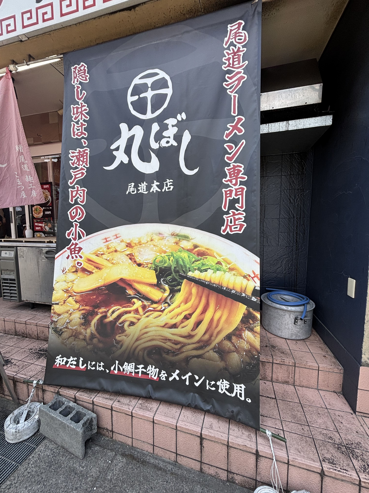
おわり
多くの景色や美味しい食べものに出会えました。
まだ行けていない道や気になるお店があったので、
また訪れたいと感じる魅力的な場所でした。